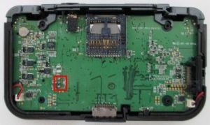
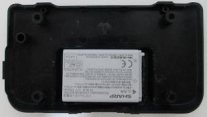
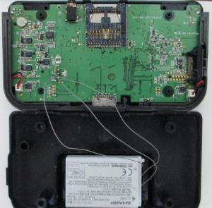
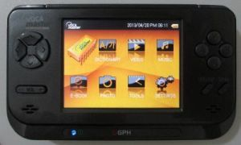

Steward
分享是一種喜悅、更是一種幸福
掌機 - GP2X F300 - Sharp 3.7V 1700mA電池
由於司徒的F300掌機缺少專用電池，加上該掌機已經停產很久，目前已經買不到專用電池，所以司徒只好自己動手更換電池，這一次要使用的電池是Sharp Zaurus 1700mA電池，由於司徒手上有多顆Sharp Zaurus的電池，所以就剛好使用在F300掌機身上
鬆開背部的螺絲就可以看到電池的PIN腳位

Sharp Zaurus 1700mA電池

連接電池中間的那個腳位也照接，頂多只是無法正確顯示電池資訊

最後蓋上蓋子並且裝上螺絲開機，看到開機畫面，真是感動的一刻

司徒目前使用Wiz掌機的充電線充電，雖然充電時，LED指示燈不會改變顏色，而且畫面的電池資訊也不會顯示充電狀態，但是，在沒有接上充電線時，電池電壓大約是3.7V，而連接充電線後，電壓大約是3.8V，表示電池是有在充電的，司徒測試了一下，充電一個晚上，隔天起來時，F300掌機的電池資訊會顯示滿格狀態，代表可以正常充電，只是充電資訊不可參考，司徒覺得可以玩遊戲比較重要，充電資訊不正確沒關係，最後，看一下自己改機的結果，真是相當高興，司徒手上又多一台可以玩PS1遊戲的掌機